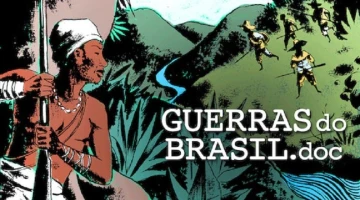

Última alteração em: 21 de setembro de 2025, 23h32.
Este suporte didático foi desenvolvido para apoiar o ensino crítico sobre a história do povo brasileiro,
valorizando as matrizes indígenas, africanas e afro-brasileiras. Aqui você encontrará propostas de aulas,
atividades, fontes e reflexões para promover uma educação plural, antirracista e transformadora.
Caros(as) colegas professores(as),
este suporte didático é fruto de um percurso que une os estudos desenvolvidos durante o Mestrado Profissional em
Ensino de História (ProfHistória), mas também dos meus mais de dez anos de vivência como professora e,
especialmente, das experiências adquiridas ao lecionar a disciplina eletiva “Formação do Povo Brasileiro” em
diferentes contextos escolares.
Foi justamente convivendo com os desafios do cotidiano, ouvindo relatos de colegas e dialogando com estudantes,
que percebi o quanto é fundamental construir espaços para o reconhecimento e valorização das raízes que
constituem nossa identidade nacional. A ausência de materiais específicos para as disciplinas eletivas, demanda
frequentemente apontada por professores na minha pesquisa, reforçou ainda mais a necessidade de um suporte
didático que pudesse inspirar e apoiar a rotina docente.
É fundamental ressaltar que este material não pretende engessar a prática do professor, pelo contrário, cada
sugestão aqui apresentada pode e deve ser adaptada à realidade da escola, ao perfil dos estudantes e à
experiência do docente. A autonomia do professor é um princípio essencial desse suporte. As atividades, fontes e
abordagens apresentadas funcionam como ponto de partida, abertas à criatividade e à inovação de cada educador.
Ao longo do material, encontram-se links de acesso a vídeos, imagens, textos e outros recursos, facilitando a
preparação das aulas e o uso efetivo dos conteúdos sugeridos. Espera-se que este suporte contribua para que as
aulas de formação do povo brasileiro sejam não apenas informativas, mas formativas através do diálogo, reflexão
e construção coletiva de conhecimento.
Ementa
Objetivos Gerais:
Compreender a pluralidade de matrizes que compõem a formação do povo brasileiro, reconhecendo o protagonismo
de indígenas, africanos e europeus na constituição da sociedade nacional.
Desenvolver uma visão crítica sobre os processos históricos de colonização, silenciamento e resistência,
valorizando as contribuições de diferentes grupos para a identidade brasileira.
Refletir sobre a presença e permanência das marcas de desigualdade, racismo e apagamento histórico no Brasil
contemporâneo.
Objetivos Específicos:
Analisar criticamente as principais narrativas sobre a formação do povo brasileiro, confrontando mitos de
harmonia e cordialidade com as realidades de conflito e resistência.
Identificar e valorizar as heranças culturais, linguísticas e sociais dos povos indígenas, africanos e
europeus.
Reconhecer e discutir o impacto das legislações e políticas públicas voltadas para a promoção da igualdade
étnico-racial.
Estimular o protagonismo estudantil na pesquisa, análise e reflexão sobre identidades, memórias e
trajetórias que compõem a sociedade brasileira.
Justificativa:
A disciplina eletiva “Formação do Povo Brasileiro” é importante no contexto escolar
para promover o reconhecimento da diversidade e da riqueza das raízes históricas, culturais e sociais do Brasil.
Em um país marcado por profundas desigualdades e persistentes processos de apagamento, é essencial criar espaços
de debate crítico, valorização de vozes historicamente silenciadas e desconstrução de estereótipos. Este
componente visa contribuir para a construção de uma educação antirracista, plural e democrática, promovendo o
respeito, a empatia e o reconhecimento das múltiplas identidades que compõem o povo brasileiro.
Objetos do Conhecimento:
Processos de colonização e formação da sociedade brasileira.
Matriz indígena: protagonismo, resistência e contribuições culturais.
Matriz africana: ancestralidade, luta e legado.
Racismo estrutural, democracia racial e desigualdades.
Legislação e direitos: demarcação de terras, políticas de cotas, leis antirracistas.
Identidade, memória e cultura brasileira.
Objetivos de Aprendizagem:
Ao longo da disciplina, espera-se que os estudantes desenvolvam a capacidade de reconhecer, analisar e valorizar
a diversidade étnico-cultural que compõe a formação do povo brasileiro, compreendendo os processos históricos de
construção das identidades, as contribuições das matrizes indígenas, africanas e europeias, bem como os
silenciamentos, resistências e lutas desses povos ao longo do tempo. Busca-se estimular o pensamento crítico
sobre as narrativas históricas tradicionais, promovendo a reflexão acerca do racismo estrutural, dos direitos e
da cidadania, e incentivando o respeito às diferenças, o combate aos preconceitos e a valorização das múltiplas
vozes que constituem a história do Brasil.
Recursos Didáticos:
Documentários, filmes, músicas, poemas e obras literárias de autores(as) indígenas, negros(as) e
pesquisadores(as) do tema.
Imagens, slides, mapas, notícias e reportagens.
Livros didáticos e paradidáticos.
Atividades interativas, dinâmicas em grupo, debates e pesquisas orientadas.
Avaliação:
Participação em discussões, debates e atividades propostas.
Produção de reflexões orais e escritas, desenhos, análises e pesquisas.
Realização de seminários, rodas de conversa e projetos de culminância.
Referências Bibliográficas:
BARCA, Isabel. Aula oficina: do projeto à avaliação. In: JORNADA DE EDUCAÇÃO
BITTENCOURT, Circe Maria Fernandes. Ensino de História: fundamentos e métodos. 3. ed.
São Paulo: Cortez, 2009.
FERNANDES, Florestan. A integração do negro na sociedade de classes. São Paulo:
Ática, 2008.
HISTÓRICA, 4., 2004, Braga. Anais... Braga: Centro de Investigação em Educação
(CIED), Universidade do Minho, 2004a, p. 131-144.
RIBEIRO, Darcy. O povo brasileiro: a formação e o sentido do Brasil. São Paulo: Companhia das Letras, 1995.
SCHWARCZ, Lilia Moritz. O espetáculo das raças: cientistas, instituições e questão
racial no Brasil (1870-1930). São Paulo: Companhia das Letras, 1993.
SCHWARCZ, Lilia Moritz. Nem preto nem branco, muito pelo contrário: cor e raça na sociabilidade
brasileira. São Paulo: Claro Enigma, 2012.
SILVA, Petronilha Beatriz Gonçalves e. Educação e relações raciais: refletindo sobre
algumas questões. In: GOMES, Nilma Lino;
SILVA, Petronilha Beatriz Gonçalves e
(Orgs.). Experiências étnico-culturais para a formação de professores. Belo Horizonte:
Autêntica, 2002.
SOUZA, Osvaldo Rodrigues de. História do Brasil. São Paulo: Ática, 1985.
Bloco 1: Desconstruindo a História Oficial
Iniciamos nossa jornada com um convite à desconstrução. Neste primeiro bloco, propomos um mergulho
crítico nas narrativas que tradicionalmente moldaram o ensino da História no Brasil. Por muito tempo, a formação
do povo brasileiro foi contada a partir de uma perspectiva eminentemente política, nacionalista e eurocêntrica,
que exaltava a colonização portuguesa e a ação missionária, enquanto silenciava ou minimizava a presença e a
agência dos povos indígenas e africanos. O objetivo aqui é tensionar esse olhar hegemônico, desafiando o leitor
a questionar os mitos fundadores, os apagamentos históricos e a chamada "história oficial". Por meio da análise
de diversas fontes, buscaremos romper com uma visão linear e excludente, preparando o terreno para a
reconstrução de novas e mais plurais perspectivas sobre quem somos.
Aula 01 – Apresentação da Eletiva “Formação do Povo Brasileiro”
Duração: 2 horas/aula
Objetivos do encontro:
Apresentar a proposta, a ementa e os objetivos gerais da eletiva aos estudantes.
Provocar uma reflexão inicial sobre o conceito de povo brasileiro e os diferentes olhares presentes na
construção da nossa identidade.
Incentivar o pensamento crítico acerca dos silenciamentos históricos relacionados a indígenas e africanos
na
história oficial do Brasil.
Problematização:
O Brasil é um país conhecido por sua diversidade, mas até que ponto essa diversidade está realmente presente na
maneira como entendemos a nossa própria história? De que forma as narrativas tradicionais acabam ocultando as
raízes indígenas e africanas do povo brasileiro? Como podemos (re)pensar a formação do Brasil para além do olhar
eurocêntrico?
Fontes sugeridas:
Imagem 1 – A Primeira Missa no Brasil (1861), de Victor Meirelles. Acervo do Museu Nacional de Belas
Artes. Fonte: Brasil Escola, acessado em: 28 jul. 2025.
"Durante milhares de anos, os povos que viviam na Europa não sabiam que existia a América. Por
sua vez, os habitantes da América — os índios — não sabiam que existia a Europa.
Esta situação durou até 1492, ano em que Cristóvão Colombo chegou à América. Começava então um período
de grandes navegações pelos oceanos. As maiores viagens desse período foram realizadas pelos portugueses
e espanhóis. Foi numa dessas viagens que os portugueses descobriram o Brasil.
Vamos ver como foi esse período de grandes descobrimentos."
(SOUZA, Osvaldo Rodrigues de. História do Brasil. São Paulo: Ática, 1985.).
Sugestões de abordagem didática:
Faça a apresentação inicial, contextualizando e evidenciando a relevância da disciplina; destacando
temas,
formas de avaliação e metodologias.
Entregue e leia a ementa de forma coletiva, promovendo breve debate sobre as expectativas dos alunos,
experiências prévias ou curiosidades sobre o tema.
Utilize a imagem da “Primeira missa no Brasil” de Victor Meirelles como norteador para discutir: “Quem
está
representado? Quem está ausente? Por que essa imagem foi tão utilizada nos livros didáticos?”
Apresente e discuta sobre o trecho do livro de história que utiliza o termo “Descobrimento do Brasil”. A
partir da fonte, estimule a turma a refletir sobre a construção do olhar eurocêntrico na história do
Brasil.
Apresente o desafio para o próximo encontro: que cada estudante traga um objeto, imagem, música ou
relato
familiar que considere representativo da identidade brasileira.
Atividades propostas:
Debate coletivo a partir da análise da imagem e trecho do livro de didático de história.
Registro no quadro das percepções dos alunos sobre quem é (ou não) representado nas narrativas
tradicionais. Preparação do material para a próxima aula (objetos/elementos da identidade).
Avaliação:
Participação no debate
Contribuições para a discussão sobre identidade e diversidade
Envolvimento na atividade preparatória
Para refletir:
Esta primeira aula é estratégica para mobilizar o interesse dos estudantes e estabelecer o tom crítico e
reflexivo que orientará toda a disciplina. O objetivo principal não é esgotar os temas, mas abrir espaço
para o questionamento das versões tradicionais da história e valorizar a multiplicidade de experiências e
narrativas que compõem a formação do povo brasileiro.
Aula 02 – Qual o conceito de povo?
Duração: 2 horas/aula
Objetivos do encontro:
Refletir sobre o significado e as múltiplas dimensões do conceito de povo.
Compreender a pluralidade e os elementos que constituem diferentes povos ao redor do mundo, com
ênfase
na formação do povo brasileiro.
Incentivar os alunos a reconhecerem a diversidade de identidades, culturas e experiências presentes
no
Brasil.
Problematização:
Ao refletir sobre o conceito de povo, percebemos que essa não é uma definição simples ou estática. O termo
“povo” envolve questões históricas, culturais, jurídicas e sociais, sendo constantemente disputado e
reconstruído. Muitas vezes, imaginamos o povo como um grupo homogêneo, mas a realidade é marcada por uma
enorme diversidade de vivências, valores e trajetórias. No caso brasileiro, essa pluralidade se amplia ainda
mais: somos fruto do encontro não pacífico de diferentes matrizes, tradições e experiências. Afinal, o que
nos faz brasileiros? Como se constrói essa ideia de povo? Existem características comuns, ou o que predomina
são as diferenças e singularidades? Como as nossas origens plurais influenciam nossa identidade? Esta aula
busca provocar essas reflexões, incentivando cada estudante a olhar para além dos estereótipos e reconhecer
o mosaico de experiências que formam o nosso povo.
Fontes sugeridas:
Imagens de diferentes povos do mundo
Slides digitais: Formação do Povo brasileiro, produzido por Maria de Fátima Farias de Lima. O
material explora o
conceito de "povo" e sua formação, com foco no povo brasileiro. A apresentação questiona a
capacidade da aparência física ou dos costumes para determinar a origem de alguém ou identificar um
povo. Embora os costumes, crenças e tradições forneçam um contexto cultural, histórico e geográfico,
eles não são considerados classificadores definitivos nem exclusivos dos povos.
Disponível em: Google
Drive.
Acessado em: 28/07/2025.
Retome a atividade da aula anterior, pedindo aos alunos para apresentarem seus objetos e relatarem
suas
escolhas.
Promova um debate inicial: “O que esses objetos dizem sobre quem somos?”
Apresente imagens e slides de diferentes povos, incentivando comparações e discussões sobre
elementos
constitutivos de uma identidade coletiva.
Conduza a discussão: “Quais elementos nos unem? Quais nos diferenciam?”
Atividades propostas:
Debate coletivo a partir dos objetos e imagens.
Reflexão individual ou em pequenos grupos: cada aluno deve escrever ou apresentar brevemente “O que
faz
parte do povo brasileiro, a partir do que vimos e discutimos hoje?”
Elaboração de um mural coletivo, físico ou digital, com as ideias e símbolos levantados em aula.
Avaliação:
Participação nas discussões
Engajamento nas atividades
Capacidade de reconhecer e expressar a pluralidade do povo brasileiro
Para refletir:
Ao final desta aula, o mais importante não é que os estudantes decorem uma definição de povo, mas que
desenvolvam um olhar aberto para a diversidade, reconhecendo a multiplicidade de origens e experiências.
Aproveite para identificar quais estereótipos surgem e incentive o diálogo e à diversidade, valorizando
as diferentes experiências e olhares presentes em sala.
Aula 03 – Histórias que a História não conta
Duração: 2 horas/aula
Objetivos do encontro
Analisar criticamente a narrativa tradicional sobre a história do Brasil, identificando
silenciamentos e ausências históricas.
Compreender a importância do reconhecimento de vozes indígenas e africanas na construção da
história
do povo brasileiro.
Refletir sobre o papel do carnaval, e especialmente do samba-enredo, como forma de contar
histórias
e fazer denúncias.
Estimular a identificação dos estudantes com uma história mais plural, valorizando suas raízes e
promovendo o letramento racial.
Problematização
Quem são os protagonistas das histórias que aprendemos sobre o Brasil? Que vozes foram silenciadas nos
livros didáticos? Nesta aula, convidamos os estudantes a olhar para a história a partir de outras
lentes, desvendando personagens e narrativas que a história oficial insistiu em deixar à margem. Por que
conhecemos tantos nomes de reis e rainhas europeus, mas pouco sabemos sobre grandes referências
indígenas ou africanas do Brasil? O samba-enredo, expressão artística do carnaval, pode ser também uma
aula de história daquelas que a escola não contou.
Fontes sugeridas
Letra do samba-enredo da Estação Primeira de Mangueira – 2019: História pra ninar gente
grande. Composição de Danilo Firmino, Deivid Domênico, Mamá, Márcio Bola, Ronie
Oliveira e Tomaz Miranda. Acessado em: 21/09/2025.
Brasil, meu nego
Deixa eu te contar
A história que a história não conta
O avesso do mesmo lugar
Na luta é que a gente se encontra
Brasil, meu dengo
A mangueira chegou
Com versos que o livro apagou
Desde 1500
Tem mais invasão do que descobrimento
Tem sangue retinto pisado
Atrás do herói emoldurado
Mulheres, tamoios, mulatos
Eu quero um país que não está no retrato
Brasil, o teu nome é Dandara
Tua cara é de cariri
Não veio do céu
Nem das mãos de Isabel
A liberdade é um dragão no mar de Aracati
Salve os caboclos de julho
Quem foi de aço nos anos de chumbo
Brasil, chegou a vez
De ouvir as Marias, Mahins, Marielles, malês
Mangueira, tira a poeira dos porões
Ô, abre alas pros teus heróis de barracões
Dos Brasis que se faz um país de Lecis, jamelões
São verde- e- rosa as multidões
Sugestões de abordagem didática
Retome brevemente a discussão da aula anterior sobre elementos que caracterizam o povo
brasileiro,
pontuando como o carnaval foi citado como festa popular e espaço de memória.
Apresente o contexto de criação do samba-enredo da Mangueira 2019, destacando sua proposta de
contar
as histórias não oficiais do Brasil.
Distribua a letra para a turma ou projete, toque o áudio/vídeo e incentive os alunos a
acompanhar (e
cantar, se quiserem).
Promova a leitura compartilhada da letra, identificando personagens e histórias ali citadas que
normalmente não aparecem nos livros didáticos.
Provoque: “Quantos desses nomes vocês já ouviram na escola? Que outras figuras históricas
indígenas
e africanas conhecem?”
Explore a ideia de que o carnaval, além de ser festa, também é espaço de denúncia, pesquisa e
reivindicação de memória.
Atividades propostas
Análise de letra: Em grupos, identifiquem na letra da música personagens ou
acontecimentos históricos que representam vozes silenciadas.
Pesquisa rápida: Cada grupo escolhe um desses personagens/situações e faz uma
breve
pesquisa (em sala ou como tarefa) sobre quem foi e por que é importante conhecer sua história.
Roda de conversa: Compartilhem as descobertas, debatendo como o apagamento
histórico interfere na percepção que temos das nossas próprias origens. Reflexão
escrita: Individualmente, escrevam um pequeno texto respondendo: “Por que é
importante
conhecer essas outras histórias do Brasil?”
Avaliação
Participação nas discussões, análises e pesquisas propostas.
Clareza e profundidade nas reflexões orais e escritas.
Engajamento em reconhecer e valorizar as diferentes vozes da história do Brasil.
Para refletir
O carnaval é mais do que festa; é também palco de resistência, denúncia e reconstrução de memórias.
Ao trazer à tona personagens apagados e histórias pouco conhecidas, os estudantes são convidados a
questionar a versão única da história, identificar ausências e entender o impacto desse
silenciamento em sua própria identidade. Este é o convite da eletiva: conhecer para reconhecer-se.
Aula 04 – Mito da miscigenação cordial
Duração: 2 horas/aula
Objetivos do encontro
Problematizar a ideia tradicional de uma miscigenação harmônica e pacífica na formação do
povo
brasileiro.
Confrontar diferentes narrativas sobre o processo de colonização.
Reconhecer os conflitos, violências e resistências que marcaram a formação do Brasil.
Problematização
Por muito tempo, a história oficial propagou a imagem de um Brasil formado pela integração cordial
entre europeus, indígenas e africanos. Mas será que nossa miscigenação foi mesmo marcada por
harmonia e aceitação? O que essa narrativa esconde? Nesta aula, vamos analisar diferentes fontes que
abordam a formação do povo brasileiro, questionando o mito da cordialidade e trazendo à tona os
conflitos, as resistências e os silenciamentos que marcaram esse processo.
Fontes sugeridas
Trecho do Livro Casa-grande & Senzala (FREYRE, 2004):
"A força, ou antes, a potencialidade da cultura brasileira parece-nos residir toda na
riqueza de antagonismos equilibrados (...) Não que no brasileiro subsistam, como no
anglo-americano, duas metades inimigas: a branca e a preta; o ex-senhor e o ex-escravo. De
modo nenhum. Somos duas metades confraternizantes que se vêem mutuamente enriquecendo de
valores e experiências diversas; quando nos completarmos num todo, não será com o sacrifício
de um elemento ao outro ]" (FREYRE) (apud FREYRE, Casa-grande & senzala, Rio de
Janeiro, Maia e Schmidt
Ltda.,2004, p. 23-24)
Inicie a aula apresentando o conceito de “miscigenação cordial” a partir do trecho de
Casa-grande & senzala, de Gilberto Freyre, inclusive contextualizando sobre o autor
e a
forte influência dessa obra para o imaginário da sociedade brasileira harmoniosa. Realize
uma
leitura compartilhada do texto e questione a turma sobre qual ideia de formação do povo
brasileiro o autor sugere, destacando palavras como “confraternização”, “equilíbrio” e a
ausência de conflitos.. Faça alguns questionamentos como “Que ideia de formação do povo
brasileiro Freyre apresenta nesse trecho? Ele considera que houve conflito ou harmonia?”
Estimule que os alunos debatam o sentido de “confraternização” e de “antagonismos
equilibrados”
apresentado pelo autor.
Na sequência, explique que essa versão idealizada será confrontada com outras perspectivas
históricas. Apresente o filme Uma História de Amor e Fúria, focando nos segmentos
do
período da colonização. Oriente os alunos a observar como o filme retrata o encontro entre
europeus, indígenas e africanos, atentando para episódios de resistência, opressão e
violência.
Durante ou após a exibição, promova um debate orientado por questões como:
De que maneira o filme questiona ou contradiz a ideia de uma miscigenação pacífica?
Quais personagens e histórias o filme traz à tona que geralmente são silenciadas na história
oficial?
Que reflexões o filme provoca sobre as violências e resistências indígenas
e
negras?
Finalize a discussão recuperando o objetivo da aula: mostrar que, apesar da narrativa sobre
a
cordialidade e harmonia da miscigenação, a formação do povo brasileiro foi atravessada por
conflitos, imposições e resistências. Encoraje os alunos a refletirem sobre a importância de
revisitar fontes e narrativas para reconstruir uma história mais plural sobre nossa formação
social.
Atividades propostas
Produção escrita: Partido da discussão em sala e da análise das fontes,
crie um
texto sobre: “Por que é importante problematizar o mito da miscigenação cordial no
Brasil?”
Avaliação
Participação nos debates.
Capacidade de argumentar e identificar diferentes perspectivas nas fontes analisadas.
Produção escrita que revele compreensão crítica da aula.
Para refletir
Ao final desta aula, busque perceber se os estudantes conseguiram identificar os limites das
narrativas tradicionais e ampliar o olhar para a complexidade dos encontros e desencontros que
marcaram a formação do Brasil. Incentive-os a pensar sobre como mitos nacionais ainda
influenciam nossa autoimagem e nossas relações sociais. Valorize dúvidas, questionamentos e
produções criativa eles são sinal de reflexão profunda sobre a história.
Bloco 2: Matriz Indígena
Neste segundo bloco, nosso foco se volta para o reconhecimento da diversidade, do protagonismo e
da contínua presença dos povos originários na história do Brasil. Distanciando-nos de
representações que reduzem a presença indígena a um papel secundário ou folclórico, esta seção
busca valorizar os saberes, as lutas e os legados desses povos. Para isso, daremos destaque a
fontes produzidas por intelectuais e lideranças indígenas, garantindo que suas vozes sejam
ouvidas não apenas como objeto de estudo, mas como sujeitos históricos e produtores de
conhecimento. A proposta é estimular o respeito à pluralidade e à agência histórica desses
sujeitos, fortalecendo a autonomia do leitor na construção de um conhecimento mais justo e
representativo.
Aula 05 – Colonização do Brasil: vozes indígenas
Duração: 2 horas/aula
Objetivos do encontro
Compreender a colonização do Brasil a partir do protagonismo indígena e da perspectiva
dos
povos originários.
Refletir sobre a violência, o etnocídio e o processo de resistência indígena na história
do
Brasil, do passado ao presente.
Valorizar as narrativas e vozes indígenas como fontes históricas e culturais
fundamentais
para a compreensão da formação do povo brasileiro.
Problematização
Por muito tempo, a história da colonização do Brasil foi contada a partir do olhar europeu,
frequentemente romantizando o chamado “descobrimento” e silenciando as vozes indígenas. O
episódio “Guerras de Conquista”, do documentário Guerras do Brasil.doc, convida a
repensar esse processo a partir de novas perguntas: Que guerra foi essa? Por que o autor define
a colonização como uma guerra? Que elementos o documentário apresenta que contradizem a
narrativa oficial? E como a luta dos povos indígenas pela sobrevivência, território e cultura
permanece ainda hoje?
Fontes sugeridas
Documentário: GUERRAS DE CONQUISTA. In: GUERRAS DO BRASIL.DOC. Direção:
Luiz Bolognesi. Produção: Buriti Filmes e Gullane. Brasil, 2019. 1º episódio. Acessado em:
21/09/2025.

Documentário "Guerras do Brasil.doc"
Mapa dos povos indígenas atuais: INSTITUTO BRASILEIRO DE GEOGRAFIA E ESTATÍSTICA (IBGE).
Mapas Indígenas. Rio de Janeiro: IBGE, 2025. Disponível em: https://indigenas.ibge.gov.br/mapas-indigenas-2.html.
Acessado em: 16 set. 2025.
Depoimentos de lideranças indígenas apresentados no documentário
Sugestões de abordagem didática
Inicie contextualizando brevemente a série documental: quem produziu, ano, objetivo e a
importância do enfoque indígena. Questione o título do episódio: “Guerra de Conquista”
de
quem? Sobre o quê? Esse conflito já terminou?
Em seguida, faça a exibição do filme, orientando os alunos a anotarem informações e
aspectos
que considerem mais marcantes: dados demográficos, depoimentos, falas de indígenas,
descrições de violência, exemplos de resistência, etc.
Ao encerrar ao episódio conduza uma discussão guiada com perguntas provocativas,
como:
O que diferencia a versão apresentada pelo documentário daquela tradicionalmente
ensinada?
Como a luta dos povos indígenas foi (ou ainda é) apagada dos livros didáticos?
Por que o documentário fala de “guerras” e não de “descobrimento”?
Quais exemplos de resistência e sobrevivência indígena mais impactaram?
O que mudou, ou não mudou, no Brasil desde então?
Explore as informações demográficas e históricas apresentadas, em tela, no decorrer do
episódio, sobre os povos indígenas no Brasil: número de povos, territórios e impactos da
colonização.
Ao final da aula, convide os alunos a participarem de uma atividade de sala de aula
invertida para o próximo encontro. Explique que, como preparação para a próxima aula, os
alunos deverão se organizar em grupos, acessar o site “Povos Indígenas no Brasil”
(https://pib.socioambiental.org/) e
pesquisar sobre um povo indígena específico.
Reforce a importância da pesquisa autônoma para conhecer a diversidade dos povos
indígenas
no Brasil, incentivando os alunos a irem além do senso comum e dos estereótipos.
Atividades propostas
Criação de painel visual: Os alunos, individualmente ou em grupos,
devem
produzir um painel (desenho, cartaz ou linha do tempo ilustrada)
representando
os diferentes aspectos da resistência indígena retratados no documentário. É importante
valorizar as vozes indígenas, representando tanto as lutas do passado quanto desafios
atuais
(demarcação de terras, preservação cultural, etc).
Debate orientado: A partir dos painéis, organize uma roda de conversa
para
que cada grupo apresente suas principais conclusões, destacando aquilo que mais os
surpreendeu ou fez repensar a história do Brasil.
Avaliação
Participação nas discussões e atividades propostas
Qualidade das reflexões apresentadas no painel e/ou texto
Engajamento na análise crítica das fontes audiovisuais
Para refletir:
Ao final desta aula, busque perceber se os estudantes passaram a reconhecer que a
colonização do Brasil foi marcada por conflitos, violência e resistência. Incentive que
valorizem fontes e vozes indígenas e compreendam a história não como um relato único, mas
como um mosaico de narrativas. Acolha as dúvidas, incentive a escuta atenta, e destaque como
o conhecimento histórico pode contribuir para uma sociedade mais plural, justa e consciente
de suas raízes.
Aula 06: Conhecendo povos indígenas
Duração: 2 horas/aula
Objetivos do encontro
Proporcionar o protagonismo dos estudantes no processo de pesquisa e apresentação
sobre
povos indígenas brasileiros.
Compreender a pluralidade dos povos indígenas no Brasil, reconhecendo diversidade de
línguas, culturas, organizações sociais e regiões de ocorrência.
Combater estereótipos e ampliar o conhecimento sobre a presença indígena em todas as
regiões do país, inclusive na realidade local/regional.
Problematização
Quando pensamos em “povos indígenas”, muitas vezes nos vêm à mente imagens estereotipadas ou
restritas a algumas regiões do país. Mas afinal, quem são os povos indígenas do Brasil?
Quantos são? Onde vivem? Que línguas falam? Que costumes preservam? Nesta aula, a partir do
olhar e da pesquisa dos próprios alunos, vamos buscar respostas para essas perguntas,
reconhecendo a riqueza e a complexidade da presença indígena no Brasil contemporâneo.
Apresentações dos grupos (materiais produzidos pelos estudantes: slides, cartazes,
vídeos, mapas etc.)
Sugestões de abordagem didática
Orientações para a sala de aula invertida
Organize os alunos em grupos e atribua previamente a cada grupo um povo indígena para
pesquisa. Essa divisão garante que o trabalho seja equilibrado e permite ao professor
preparar-se melhor para a mediação do debate e para aprofundar as discussões durante a
apresentação dos resultados.
Sugestão de Povos Indígenas a serem pesquisados:
Yanomami (Norte – Roraima/Amazonas): maior território indígena do
Brasil, diversidade cultural, questões recentes de saúde e território.
Guarani (Sudeste/Sul/Centro-Oeste): presença em diversos estados,
tradição cultural forte, desafios atuais com terras.
Tupinambá (Nordeste – Bahia): protagonismo histórico, resistência à
colonização, lutas contemporâneas por território.
Tremembé (Nordeste – Ceará): povo tradicional do Ceará,
experiências de
resistência, cultura e revitalização das línguas e tradições.
Xavante (Centro-Oeste – Mato Grosso): organização social e cultural
distinta, destaque nos movimentos de resistência.
Orientações práticas:
Forme grupos de 4 ou 5 alunos, de acordo com o número total da turma.
Explique brevemente quem são os povos indicados e o porquê da escolha, valorizando
tanto
a representatividade nacional quanto a regional.
Indique que a principal fonte de pesquisa será o site “Povos Indígenas do Brasil”
(https://pib.socioambiental.org/pt)h,
incentivando a busca por informações sobre
história, território, língua, organização social, desafios atuais e contribuições
culturais.
Oriente que cada grupo organize sua apresentação para compartilhar na próxima aula
os
principais aspectos do povo pesquisado, utilizando recursos visuais (cartazes,
slides,
mapas, imagens) se possível.
Observação: Essa preparação deve ser realizada ao final da aula
anterior (aula 5), de modo que os alunos já saiam com a tarefa definida, e
retomada rapidamente no início da aula seguinte para esclarecer dúvidas e reforçar a
importância da diversidade dos povos indígenas no Brasil.
Inicie a aula retomando a tarefa de pesquisa atribuída na aula anterior, destacando
os
povos indígenas definidos para cada grupo (Yanomami, Guarani, Tupinambá, Tremembé e
Xavante, por exemplo).
Ao final de cada apresentação, conduza um breve debate com a turma, destacando a
diversidade de experiências, a presença dos indígenas em diferentes regiões e
desconstruindo mitos sobre um suposto “modelo único” de ser indígena.
Valorize o protagonismo dos alunos na produção e compartilhamento do
conhecimento.
Atividades propostas
Apresentação dos grupos sobre os povos indígenas.
Debate coletivo: principais descobertas, percepções e curiosidades.
Elaboração, em sala, de um painel coletivo (cartaz, mural ou mapa) que registre as
informações sobre cada povo estudado e destaque a diversidade indígena no
Brasil.
Avaliação
Participação nas pesquisas, apresentações e discussões.
Engajamento e respeito na escuta das apresentações dos colegas.
Contribuição para o painel coletivo.
Para refletir
Mais do que “reproduzir” informações, esta aula visa estimular a curiosidade, a escuta
ativa e o respeito à pluralidade dos povos indígenas. Ao protagonizarem a pesquisa, os
alunos não apenas ampliam o repertório, mas também se reconhecem como sujeitos capazes
de construir e compartilhar conhecimento.
Aula 07 – Ser indígena hoje: diversidade, lutas e protagonismo
Duração: 2 horas/aula
Objetivos do encontro
Compreender a pluralidade das identidades indígenas no Brasil contemporâneo.
Refletir sobre o protagonismo das lideranças indígenas e suas lutas atuais.
Desconstruir estereótipos associados aos povos indígenas, valorizando suas
múltiplas
formas de existir, viver e resistir.
Discutir a importância da mudança de termos e nomenclaturas para uma compreensão
mais justa e respeitosa dos povos indígenas.
Problematização
Ao longo do tempo, a imagem do indígena foi construída a partir de estereótipos: aquele
que vive na floresta, usa arco e flecha, mora em aldeia ou tribo e fala uma língua
diferente. Porém, será que essa é a única realidade indígena? Quantos indígenas existem
hoje no Brasil? Onde vivem? O que fazem? Que profissões exercem? Por que muitos ainda se
referem a eles como “índios”? Esta aula propõe um exercício de revisão dessas
ideias, ouvindo o que os próprios indígenas têm a dizer sobre suas identidades, lutas e
saberes, compreendendo que a história deles está viva nos campos, nas cidades, nas
artes, na política e na escola.
Fontes sugeridas
Documentário: Falas da Terra (GloboPlay, 2021). Direção de Graciela
Guarani, Olinda Muniz e Erika Kandire.
Disponível em: https://www.youtube.com/watch?v=BdDpp6USz5Y,
Acessado em: 29/07/2025.
Depoimentos de lideranças indígenas (presentes no próprio documentário)
Sugestões de abordagem didática
Inicie contextualizando o documentário, destacando o protagonismo indígena em
todas
as etapas de produção e o objetivo de trazer ao centro as vozes de quem vive a
realidade indígena.
Antes da exibição, oriente o olhar dos alunos para identificar:
Quem são os indígenas retratados? Onde vivem? Quais profissões exercem?
Quais lutas e desafios os povos indígenas enfrentam hoje?
Como se define “ser indígena” segundo os próprios depoentes?
O que te surpreendeu ou desconstruiu do que você pensava sobre os povos
indígenas?
Que imagens e narrativas aparecem e quais ficam de fora dos livros didáticos?
Realize a exibição do documentário (integral ou trechos selecionados).
Após o filme, promova um debate, partindo das perguntas direcionadas
anteriormente e
estimulando também os estudantes a comentarem as situações, falas e imagens que
mais
chamaram atenção.
Destaque personalidades presentes no documentário, como Raoni Metuktire e outras
lideranças indígenas, incentivando os alunos a pesquisar mais sobre suas
trajetórias.
Liste, no quadro, palavras ou expressões que os alunos costumam ouvir ou usar
sobre
povos indígenas e, juntos, discutam o porquê delas serem inadequadas,
reducionistas
ou ultrapassadas (por exemplo: “índio”, “tribo”, “aldeia”, “reservas”).
Enfatize o uso correto de termos: “indígena”, “povo”, “comunidade”, “terras
indígenas”, etc.
Atividades propostas
Questionário orientado sobre o documentário
Roda de conversa: relatos, impressões e perguntas que surgiram durante o
documentário.
Elaboração de um glossário coletivo sobre termos corretos e inadequados para se
referir a povos indígenas.
Como atividade complementar, peça aos alunos que pesquisem sobre algumas
lideranças
e ativistas indígenas que aparecem no documentário e compartilhem em sala.
Sugestão:
(Raoni Metuktire, Ailton Krenak, Sônia Guajajarara, Daniel Munduruku.)
Para refletir:
Esta aula é um convite à escuta e à valorização das múltiplas vozes indígenas presentes
na sociedade brasileira. O mais importante é que cada estudante perceba que ser indígena
não é uma realidade fixa ou do passado, mas uma experiência plural, contemporânea e em
constante movimento. Incentive os alunos a enxergar a riqueza e a diversidade dos povos
originários, reconhecendo-os como sujeitos ativos, criadores de cultura e protagonistas
de suas próprias histórias e lutas.
Aula 08 – Legados Indígenas
Duração: 2 horas/aula
Reconhecer a presença e importância dos legados indígenas na cultura e no
cotidiano
brasileiro.
Identificar, a partir da música “Território Ancestral”, temas como resistência,
lutas atuais, memória e diversidade indígena.
Promover uma reflexão crítica sobre o protagonismo e a invisibilidade dos povos
indígenas no Brasil contemporâneo.
Problematização
Apesar de séculos de colonização, violência e apagamento, a cultura indígena
permanece
viva em nossos costumes, na nossa alimentação, nas palavras que falamos, nos nomes
de
lugares, nos saberes sobre a terra. No entanto, esse legado muitas vezes passa
despercebido na nossa sociedade. Como podemos reconhecer e valorizar o que herdamos
dos
povos indígenas? Como a música, como expressão cultural, pode dar visibilidade a
essas
heranças e lutas?
Letra da música “Território Ancestral”. Composição de Kaê
Guajajarara.
Alô mãe, você sente minha falta?
Por que eu também sinto falta de mim
Alô mãe, canta que o corpo transpassa o tempo
E nos faz resistir
Deixei meu cocar no quadro
Retrato falado, escrevo daqui
Num apagamento histórico
Me perguntam como eu cheguei aqui
A verdade é que eu sempre estive
Vou te contar uma história real
Um a um morrendo desde os navios de Cabral
Nós temos nomes, não somos números
Pra me manter viva, preciso re-existir
Dizem que não sou de verdade
Que não deveria nem estar aqui
O lugar onde vivo me apaga e me incrimina
Me cala e me torna invisivel
A arma de fogo superou a minha flecha
Minha nudez se tornou escandalizacao
Minha língua mantida no anonimato
Kaê na mata, Aline na urbanização
Mesmo vivendo na cidade
Nos unimos por um ideal
Na busca pelo direito
Território ancestral
Vou te contar uma história real
Pindorama (território ancestral)
Brasil (tekohaw tekohaw)
Demarcação já!
No território ancestral
Inicie a aula introduzindo o tema da aula, destacando a importância de
conhecermos
os
legados das nossas raízes.
Utilize slides para mostrar exemplos práticos das contribuições indígenas em
diferentes aspectos do cotidiano brasileiro. Estimule perguntas do tipo: “O que
aqui
surpreendeu vocês?” “O que é mais marcante?”
Ao encerrar esse primeiro momento da aula, faça a transição para a próxima fonte
a
ser trabalhada, explicando que, para além de objetos e costumes, há também um
legado
de luta e resistência.
Neste segundo momento da aula faça a audição e análise da música “Território
Ancestral” da compositora Kaê Guajajarara.
Distribua a letra da música “Território Ancestral” para a turma.
Ouça o áudio/vídeo juntos.
Oriente os alunos a grifarem ou anotarem frases que se conectem com os
legados
apresentados ou com temas das aulas anteriores (cultura, resistência,
invisibilidade,
identidade, lutas, etc.).
Em seguida promova um debate sobre as mensagens da música:
O que mais chamou a atenção?
Que relações fizeram entre a música e o que viram nas aulas anteriores?
Que legados aparecem de forma direta ou indireta na canção?
Por que o território é chamado de ancestral?
Faça um fechamento, sistematizando com a turma o que ficou de principal
aprendizado
sobre a matriz indígena, seja sobre os seus legados, lutas, diversidade, enfim,
de
tudo que foi estudado ao longo das últimas aulas.
Atividades propostas
Participação ativa nas discussões.
Identificação, na letra da música, de elementos relacionados às temáticas
discutidas
ao longo das aulas sobre matriz indigena.
Elaboração de uma frase, cartaz, ou desenho que resuma o principal legado
indígena
identificado por cada estudante.
Avaliação
Engajamento e participação nas atividades e debates. Capacidade de relacionar
os
conteúdos apresentados ao cotidiano e às discussões anteriores.
Para refletir:
Encerrar o bloco indígena com a música "Território Ancestral" é uma oportunidade de
reconhecer a presença dos povos originários em nosso passado e presente, reafirmando
a
importância da resistência, do respeito à diversidade e da luta por direitos.
Estimule a
turma a pensar que conhecer os legados indígenas é também reconhecer-se como parte
desse
território ancestral.
Bloco 3: Matriz Africana
O terceiro bloco deste livro é dedicado a abordar a riqueza e a complexidade da
matriz africana, rompendo com o paradigma historiográfico que frequentemente associa
a presença negra no Brasil exclusivamente à condição de escravo. Nosso objetivo é
valorizar as trajetórias, as culturas, as diversas formas de resistência e as
inúmeras conquistas dos afro-brasileiros, destacando sua centralidade na formação do
nosso país. Utilizaremos fontes como músicas, poemas e documentários para aproximar
o leitor das experiências e contribuições africanas e afro-brasileiras. Além de
apresentar novas narrativas, este bloco também convida a uma reflexão crítica sobre
o racismo, compreendendo-o como uma estrutura histórica e social que precisa ser
identificada e combatida.
Aula 09 — Africanos no Brasil: origens, diversidade e
desumanização
Duração: 2 horas/aula
Objetivos do encontro
Reconhecer a diversidade étnica, cultural e linguística dos povos africanos que
foram trazidos ao Brasil.
Refletir sobre o processo de desumanização que os africanos sofreram ao serem
escravizados e o impacto desse processo na formação da sociedade brasileira.
Valorizar as histórias, culturas e protagonismo dos africanos e seus
descendentes,
rompendo com visões estereotipadas e reducionistas.
Problematização
Ao se falar de africanos no Brasil, muitas vezes, limita-se sua história à condição
de
escravizados. No entanto, antes da chegada forçada, esses povos já possuíam
culturas,
civilizações e trajetórias ricas e plurais. Como a sociedade brasileira ainda
carrega
marcas desse processo de desumanização? O que significa reconhecer que somos
descendentes de pessoas escravizadas e não de “escravos”? De que forma a história
oficial silenciou e homogenizou a diversidade africana? Essa aula busca refletir
sobre
pluralidade das origens africanas e o protagonismo dessas populações na construção
do
Brasil.
Rangel, Viana, Golfo, Cazenga pois
Marçal, Sambizanga, Calemba dois
Rangel, Viana, Golfo, Cazenga pois
Marçal, Sambizanga, Calemba dois
One love, amor pro'cês, sério
Djavan me disse uma vez
Que a terra cantaria ao tocar meus pés
Tanta alegria fez brilhar minha tês
Que arte é fazer parte, não ser dono
Nobreza mora em nós, não num trono
Logo, somos reis e rainhas, somos
Mesmo entre leis mesquinhas vamos
Gente, só é feliz
Quem realmente sabe, que a África não é um país
Esquece o que o livro diz, ele mente
Ligue a pele preta a um riso contente
Respeito sua fé, sua cruz
Mas temos 256 Odus
Todos feitos de sombra e luz, bela
Sensíveis como a luz das velas ('tendeu?)
Rangel, Viana, Golfo, Cazenga pois
Marçal, Sambizanga, Calemba dois
Rangel, Viana, Golfo, Cazenga pois
Marçal, Sambizanga, Calemba dois
Aí, tá na cintura das mina de Cabo Verde
E nos olhares do povo em Luanda
Nem em sonho eu ia saber que
Cada lugar que eu pisasse daria um samba
Numa realidade que mói
Junta com uma saudade que é mansinha, mas dói
Tanta desigualdade, a favela, os boy
Atrás de um salário, uma pá de super herói, sabe?
Louco tantos Orfeus, trancados
Nos contrato de quem criou o pecado
Dorme igual flor num gramado
E um vira-lata magrinho de aliado
Brusco, pick o cantar de pneus
Dizem que o diabo veio nos barcos dos europeus
Desde então o povo esqueceu
Que entre os meus, todo mundo era Deus (morô, vai?)
E eu não sabia mais se eu tava em casa
Ou se eu tava viajando, certo mano?
Meu coração ficou com todos os meus irmão
Todas as minhas irmã que eu encontrei pelo mundo, certo?
Queria agradecer a todos eles
Cabo Verde, Tiara Grande, Pri, é 'nois
Rangel, Viana, Golfo, Cazenga pois
Marçal, Sambizanga, Calemba dois
Rangel, Viana, Golfo, Cazenga pois
Marçal, Sambizanga, Calemba dois
Rangel, Viana, Golfo, Cazenga pois
Marçal, Sambizanga, Calemba dois
Rangel, Viana, Golfo, Cazenga pois
Marçal, Sambizanga, Calemba dois (moleque, obrigado meu Deus)
Já dizia o poeta
A África está nas crianças e o mundo está por fora
Muito obrigado
A voz de minha bisavó
ecoou criança
nos porões do navio.
Ecoou lamentos
de
uma infância perdida.
A voz de minha avó
ecoou obediência
aos brancos-donos de tudo.
A voz de minha mãe
ecoou baixinho revolta
no fundo das cozinhas alheias
debaixo
das trouxas
roupagens sujas dos brancos
pelo caminho empoeirado
rumo à favela.
A minha voz ainda
ecoa versos perplexos
com rimas de sangue
e fome.
A voz de minha filha
recolhe todas as nossas vozes
recolhe em si
as vozes mudas
caladas
engasgadas nas gargantas.
A voz de minha filha
recolhe em si
a fala e o ato.
O ontem — o hoje — o
agora.
Na voz de minha filha
se fará ouvir a ressonância
o eco da
vida-liberdade.
Depoimentos de lideranças indígenas apresentados no documentário
Sugestões de abordagem didática
Inicie a aula exibindo o mapa da África, ressaltando as principais regiões de
onde
vieram os africanos que foram trazidos ao Brasil. Peça que os alunos
identifiquem no
mapa nomes de países, regiões e, se possível, etnias (iorubás, bantos, jejes,
etc.),
destacando a pluralidade desses povos.
Exiba o vídeo “Ancestralidade Africana” e, após, estimule uma conversa sobre os
diferentes povos africanos, suas culturas e religiões. Reforce que a África é um
continente plural, não um país único.
Trabalhe a música “Mufete” do Emicida: distribua a letra impressa, ouça a música
com
os alunos e explore os versos que destacam a ancestralidade, identidade e
orgulho
das origens africanas.
Pergunte: O que aprendemos sobre a África nos livros didáticos? Como a
música
desconstrói estereótipos sobre o continente e seus povos?
Finalize o encontro lendo o poema “Vozes-mulheres” de Conceição Evaristo,
destacando
as várias gerações de mulheres negras, a memória da ancestralidade, a violência,
mas
também a resistência e o protagonismo.
Discuta: Como a experiência das mulheres negras contribui para a história do
Brasil? Qual a diferença entre ser descendente de pessoas escravizadas e ser
“descendente de escravos”?
Alternativa Metodológica – Rotação por Estações
Para diversificar a dinâmica desta aula, sugerimos a metodologia de rotação por
estações, em que os alunos trabalham em grupos com as três fontes simultaneamente. Veja
o passo a passo:
Organização da atividade
Divida a turma em três grupos.
Cada grupo começa por uma estação, permanecendo nela por cerca de 20 minutos.
Após o tempo estipulado, rotacionam para a próxima estação, até que todos passem
por
todas as fontes.
Em cada estação, os alunos realizam uma atividade orientada e registram suas
reflexões.
Estação 1 – Vídeo: Ancestralidade Africana
Objetivo: Compreender as origens, línguas, culturas e diversidade
dos povos africanos trazidos para o Brasil. Atividade:
Assista ao vídeo Ancestralidade Africana (link sugerido ou exibido pelo
professor).
Em grupo, responda:
Quais as principais regiões da África de onde vieram os africanos escravizados?
O vídeo traz informações sobre as línguas, religiões ou costumes desses povos?
Quais?
Como essa diversidade é importante para a história do Brasil?
Produto esperado: Mapa-resumo das principais origens e culturas dos
africanos trazidos para o Brasil.
Estação 2 – Música: Mufete (Emicida)
Objetivo: Perceber como a música contemporânea revisita as raízes
africanas e desconstrói estereótipos. Atividade:
Ouça a música e leia a letra impressa.
Discuta em grupo:
Quais referências à África aparecem na música?
O que a letra nos diz sobre identidade e ancestralidade?
Como a música desafia a ideia de uma África única e homogênea?
Sublinhe ou marque versos que falem de resistência, diversidade ou orgulho
ancestral.
Produto esperado: Cartaz ou painel destacando trechos da música e
seus significados.
Objetivo: Refletir sobre o processo de desumanização e resistência
das mulheres negras ao longo da história. Atividade:
Leitura coletiva e comentada do poema.
Debate:
Que vozes aparecem no poema? Quais experiências atravessam gerações?
Como o poema retrata a força e a resistência das mulheres negras?
Que sentimentos ou reflexões a leitura provoca?
Escreva, em poucas linhas, uma síntese do poema e sua relação com a aula.
Produto esperado: Mini-texto coletivo e/ou desenho expressando o
impacto do poema.
Após a rotação, reúna a turma para socializar as descobertas, reflexões e
produções
de cada estação.
Discuta:
O que aprendemos sobre a diversidade africana e a desumanização no Brasil?
Como a cultura afro-brasileira resiste e se reinventa até hoje?
Dica para o professor: Caso haja pouco tempo, selecione apenas um
trecho da música e do poema, ou peça para que a leitura seja feita em casa antes da
aula, agilizando o processo em sala.
Atividades propostas
Exploração do mapa: Em grupos, os alunos marcam no mapa as
regiões
de origem dos principais povos africanos que vieram para o Brasil e apresentam
para
a turma.
Roda de conversa: Após assistir ao vídeo e ouvir a música,
discuta
coletivamente: Quais imagens ou ideias sobre África mudaram ou foram ampliadas?
Análise literária: Leitura e interpretação coletiva do poema
“Vozes-mulheres”, identificando sentimentos, memórias e resistências presentes
nos
versos.
Produção criativa: Como tarefa, os alunos podem criar uma breve
narrativa, poema ou desenho que represente a pluralidade africana ou os
sentimentos
provocados pela aula.
Avaliação
Participação nas discussões e atividades propostas.
Apresentação do grupo sobre as regiões africanas no mapa.
Reflexões individuais (orais ou escritas) sobre os temas trabalhados.
Engajamento com as fontes (vídeo, música, poema) e capacidade de estabelecer
conexões com a formação do povo brasileiro.
Na abordagem de rotação por estações: participação nas discussões, produção nas
estações e síntese apresentada ao grupo.
Para refletir
Mais do que estudar o passado, esta aula propõe um olhar crítico para a presença
africana na sociedade brasileira não apenas como dor e opressão, mas também como
potência criadora, resistência e pluralidade cultural. Incentive os alunos a
repensar narrativas, superar estereótipos e reconhecer a herança afro-brasileira
em
suas próprias vidas e no cotidiano da escola.
Aula 10 — O negro na sociedade brasileira: lutas e
resistências
Duração: 2 horas/aula
Objetivos do encontro
Compreender a multiplicidade das estratégias de resistência negra ao longo
da
história do Brasil, desde o período da escravidão até os dias atuais.
Valorizar o protagonismo negro na luta pela liberdade, dignidade e direitos
civis.
Desconstruir a ideia de passividade dos negros, evidenciando formas de luta,
organização e produção intelectual.
Problematização
Durante décadas, a história oficial retratou a população negra no Brasil como
vítima
passiva da escravidão. Contudo, a experiência negra no país é marcada por
intensas
lutas, articulações e resistências seja nos quilombos, nas revoltas urbanas, nas
redes de solidariedade, na imprensa e nas manifestações culturais. Como
desconstruir
a imagem do negro apenas como subalterno ou vitimado? Que exemplos históricos
mostram o protagonismo negro na construção da sociedade brasileira? Quais formas
de
resistência permanecem e se renovam até hoje?
Inicie a aula relembrando, a partir do mapa trabalhado na aula anterior, a
presença africana no Brasil. Destaque o impacto numérico e cultural da
diáspora
africana.
Apresente o episódio “Guerras de
Palmares”, em seguida oriente os alunos a prestar atenção nas diferentes
formas de
organização, alianças e resistências dos negros, e como os quilombos
funcionaram
como espaços de liberdade, cultura e resistência. Questione: O que o
documentário
mostra sobre o protagonismo negro? Como a história tradicional representa
(ou
não) esses fatos?
Exploração da imprensa negra: Mostre reproduções ou trechos dos jornais “O
Homem
de Cor”, “O Abolicionista” e “A Voz da Raça”. Explique brevemente a
importância
da imprensa negra na luta por direitos e na construção de uma voz própria
para a
população negra.
Caso possível, ouça em sala trechos dos podcasts da Rádio Nacional BR,
relacionando as discussões do passado com as lutas atuais.
Atividades propostas
Registro e debate: Peça aos alunos que escrevam
(individualmente ou em grupos) sobre as principais lutas e formas de
resistência
do negro no Brasil em diferentes épocas, destacando exemplos do
documentário,
dos jornais e dos podcasts.
Reflexão escrita: Solicite uma breve reflexão sobre o que
mudou
na percepção dos alunos em relação ao papel do negro na história do Brasil
após
o contato com as fontes.
Pesquisa complementar: Indique, para tarefa extra,
pesquisar
sobre as lutas e resistências atuais do povo negro no Brasil.
Avaliação
Participação ativa nas discussões e debates.
Qualidade das análises e reflexões sobre as fontes trabalhadas.
Capacidade de relacionar passado e presente nas lutas e resistências
negras.
Para refletir:
A luta do povo negro por liberdade e dignidade não se limitou à resistência
física
ou à fuga da escravidão. Ela se manifestou e ainda se manifesta na cultura, na
produção intelectual, na organização política e na constante busca pelo direito
de
existir com igualdade. Estimule seus alunos a enxergar a resistência negra como
um
movimento vivo, multifacetado e fundamental para compreender a sociedade
brasileira
de ontem e de hoje.
Aula 11 – O negro para além da escravidão
Duração: 2 horas/aula
Objetivos do encontro
Compreender o protagonismo negro na história do Brasil para além da condição
de
escravizado.
Refletir sobre a trajetória de Luiz Gama como exemplo de resistência, luta
por
justiça e ascensão social.
Analisar a importância de conhecer e valorizar personalidades negras
apagadas
dos livros de história.
Desconstruir estereótipos e ampliar o olhar sobre as múltiplas trajetórias
negras no Brasil.
Problematização
Por que, ao pensarmos no negro na história do Brasil, a imagem mais frequente
ainda
é a de um escravizado? Que outras trajetórias e personagens a história oficial
invisibilizou? Como a história de Luiz Gama nos ajuda a repensar o lugar do
negro na
sociedade e em nossa memória coletiva?
Fontes sugeridas
Filme: Doutor Gama (dir. Jeferson De, 2021). Disponível em: YouTube
ou
Globoplay. Acessado em: 21/09/2025.
Apresente brevemente o contexto do filme Doutor Gama, explicando
quem
foi Luiz Gama e sua importância para a luta abolicionista e a história do
direito no Brasil.
Após o filme, promova um debate sobre:
Que aspectos da trajetória de Luiz Gama mais surpreenderam os estudantes?
Quais foram as principais estratégias usadas por ele na luta contra a
escravidão?
Por que histórias como a de Gama são pouco conhecidas? Quem são os
protagonistas
da luta abolicionista que estão ausentes dos livros?
Como o filme rompe com estereótipos sobre o negro na história do Brasil?
Atividades propostas
Debate coletivo guiado pelas questões acima.
Produção de texto reflexivo: “Como a história de Luiz Gama rompe
estereótipos
sobre o negro no Brasil?”.
Pesquisar outras personalidades negras brasileiras que atuaram em
áreas como direito, medicina, educação, arte ou política.
Avaliação
Participação no debate.
Entrega e qualidade da produção textual/reflexiva.
Para refletir:
O passado não é algo distante. Conhecer trajetórias como a de Luiz Gama é
fundamental para rompermos com visões reducionistas, desafiar estereótipos e
reconhecer o negro como agente de sua própria história. Valorize a
pluralidade
das experiências negras e incentive a turma a enxergar além dos papéis
tradicionalmente atribuídos pela história oficial.
Aula 12 – Personalidades Negras
Duração: 2 horas/aula
Objetivos do encontro
Apresentar aos estudantes a diversidade de trajetórias e lutas de
personalidades negras que marcaram a história do mundo e do Brasil.
Valorizar o protagonismo negro em diferentes áreas (política, arte,
educação, ativismo, cotidiano).
Incentivar o reconhecimento de figuras históricas e contemporâneas que
desafiaram o racismo, a desigualdade e os estereótipos.
Problematização
Por que a história tradicional costuma destacar tão poucas personalidades
negras? O que faz com que muitos nomes, trajetórias e lutas sejam
silenciados ou
esquecidos nos livros didáticos? De que forma o reconhecimento dessas
figuras
impacta a autoestima e a identidade das novas gerações?
Se possível, selecione trechos específicos do
documentário para exibir, focando na diversidade de experiências e
contextos
históricos,o para casa ou sala de aula conforme o tempo disponível
Sugestões de abordagem didática
Contextualize brevemente o documentário Falas Negras,
ressaltando
que ele reúne depoimentos dramatizados de personagens reais, de
diferentes
épocas e áreas, todos interpretados por atores negros. Explique a
relevância
do Dia da Consciência Negra e do reconhecimento dessas trajetórias.
Proponha que os alunos assistam ao documentário, orientando-os a
observar
quem são os personagens, em que contexto viveram, quais lutas travaram e
quais espaços ocuparam.
Após a exibição, divida a turma em grupos ou promova um momento coletivo
para montar um quadro resumo (no quadro, papel kraft ou digital), com as
seguintes colunas:
Nome
Nacionalidade
Ocupação
Luta
Legado
...
...
...
...
...
Atividades propostas
Preencher o quadro coletivo de personalidades, estimulando a pesquisa
sobre
personagens que geraram dúvidas ou curiosidade.
Redação/reflexão: cada estudante escolhe uma das personalidades
apresentadas
para escrever um pequeno texto sobre sua importância e legado.
Avaliação
Participação na construção do quadro e nas discussões.
Capacidade de identificar e valorizar a pluralidade de experiências e
contribuições negras para o mundo e na sociedade brasileira.
Produção de sínteses/reflexões individuais.
Para refletir
Ao destacar personalidades negras das mais variadas áreas e momentos
históricos, a aula contribui para ampliar repertórios, combater
estereótipos
e inspirar novas gerações. É fundamental que os alunos compreendam que a
luta por reconhecimento, respeito e direitos é histórica e ainda está em
curso. Estimule-os a pesquisar outras personalidades e a trazer novas
histórias para a sala de aula.
Aula 13: Racismo à brasileira
Duração: 2 horas/aula
Objetivos do encontro
Compreender a formação histórica do racismo no Brasil e seu caráter
estrutural e velado.
Identificar manifestações do racismo estrutural na sociedade
brasileira,
reconhecendo sua persistência desde o período colonial até a
atualidade.
Refletir sobre os lugares ocupados pela população negra e os
mecanismos
de exclusão e invisibilização no Brasil contemporâneo.
Repensar o uso de alguns termos que apesar de já naturalizados no
cotidiano, reforçam e alimentam o racismo.
Problematização
No Brasil, por muito tempo se propagou a ideia do “mito da democracia
racial”, ou seja, a crença de que vivemos em uma sociedade cordial, onde
diferentes grupos convivem em harmonia e o racismo seria apenas uma
exceção.
No entanto, os dados sociais, as experiências cotidianas e as histórias
apagadas mostram outra realidade: a do racismo estrutural, presente em
todos
os espaços, moldando oportunidades, acessos e os lugares ocupados pela
população negra. Esse racismo, diferente do que muitos pensam, não é
sempre
explícito, mas aparece de formas sutis e naturalizadas, inclusive na
linguagem, em que muitos termos e expressões que usamos no dia a dia
como
“lista
negra”, “mulata”, “criado-mudo” carregam significados racistas e ajudam
a
perpetuar desigualdades. Como perceber esse racismo velado? De que forma
a
ideia de democracia racial impede que enfrentemos de verdade as
injustiças
do nosso país? E por que é importante identificar e abandonar expressões
que
reforçam o preconceito? Nesta aula, o convite é para romper com a
naturalização dessas práticas, questionar discursos e desenvolver um
olhar
crítico diante das desigualdades que se perpetuam historicamente no
Brasil.
Inicie a aula retomando, brevemente, a importância de compreender o
racismo para além de atitudes individuais, mas como parte de um
sistema
enraizado historicamente no Brasil. Apresente termos aos estudantes
alguns exemplos de termos e expressões do cotidiano (como “lista
negra”,
“meia-tigela”, “criado-mudo”, “mulata”, entre outros), que são
frequentemente usados sem reflexão crítica, mas que carregam origens
e
significados racistas. Peça aos alunos que identifiquem outros
termos ou
expressões do dia a dia que possam ser problematizados, promovendo
um
diálogo sobre o impacto dessas palavras. ( Se quiser utilize o texto
“Termos e expressões racistas: nem pensar!” da cartilha
antirracista).
Na sequência, proponha o debate inicial: “Por que será que tantos
termos
pejorativos, piadas ou estereótipos relacionados a pessoas negras se
tornaram comuns e aceitos em nossa cultura? Isso é apenas ‘modo de
falar’ ou reflete algo mais profundo sobre a sociedade brasileira?”
Dê continuidade com a exibição do vídeo sobre o “Mito da Democracia
Racial” (Coleção Antirracista – Instituto Unibanco). Após o vídeo,
conduza uma discussão para desmistificar a ideia de que vivemos em
um
país livre de racismo, problematizando as raízes históricas desse
mito e
seus efeitos até hoje.
Em seguida, apresente o vídeo “Racismo Estrutural” e incentive os
alunos
a relacionarem as situações mostradas no vídeo (e nas próprias
vivências) com as expressões e exemplos trazidos anteriormente.
Provoque
a reflexão: “De que formas o racismo está presente nas estruturas
sociais, políticas e culturais do Brasil?”
Finalize com uma roda de conversa, incentivando os estudantes a
compartilhar situações que tenham presenciado ou ouvido, bem como
estratégias para romper com o uso de termos racistas e para o
enfrentamento do racismo no cotidiano escolar, familiar e
comunitário.
Atividades propostas
Discussão coletiva sobre o texto e vídeos apresentados.
Levantamento de exemplos de racismo estrutural presentes no
cotidiano
escolar, familiar ou comunitário.
Produção de um breve texto/reflexão sobre situações de racismo já
vivenciadas ou observadas.
Elaboração de um mural coletivo com frases ou imagens que expressem
o
racismo à brasileira e estratégias de enfrentamento.
Avaliação
Participação nas discussões e reflexões.
Capacidade de relacionar os conceitos de racismo estrutural/velado
com
exemplos reais.
Produção de texto ou outra forma de expressão (mural, cartaz,
podcast
etc.) sobre o tema.
Para refletir:
O racismo no Brasil, mais do que um fenômeno individual, é um projeto
coletivo que estrutura nossas relações sociais, econômicas e políticas.
Ao
compreender suas raízes históricas e reconhecer suas manifestações
cotidianas, podemos romper o silêncio, valorizar as narrativas negras e
lutar por uma sociedade verdadeiramente democrática e justa.
Bloco 4: Leis, Direitos e Memórias em Disputa
No quarto bloco, analisamos criticamente as legislações, as políticas de
ação afirmativa e os marcos legais fundamentais para as populações
indígenas e negras no Brasil. Mais do que apenas apresentar leis e datas
comemorativas, a proposta é investigar os contextos em que essas normas
foram criadas e questionar sua real efetividade na luta contra o racismo
e pela inclusão. Este bloco também problematiza a maneira como a escola
e a sociedade costumam abordar datas simbólicas, muitas vezes reforçando
estereótipos. O objetivo é incentivar a reflexão sobre como a memória, a
resistência e o reconhecimento das lutas desses grupos são disputados no
campo legal e cultural.
Aula 14 – Legislações e Direitos: Territórios
Indígenas e
Combate ao Racismo
Duração: 2 horas/aula
Objetivos do encontro
Apresentar e discutir as principais legislações brasileiras sobre
demarcação de terras indígenas, combate ao racismo e injúria racial.
Refletir sobre a aplicação, os desafios e a efetividade dessas leis
na
sociedade contemporânea.
Estimular o senso crítico dos alunos sobre a importância do
conhecimento
dos direitos e deveres constitucionais.
Problematização
Apesar de o Brasil possuir legislações para proteção dos povos indígenas
e
combate ao racismo, observamos, na prática, muitos desafios: conflitos
pela
terra, violência contra comunidades indígenas e negras, subnotificação
de
crimes raciais e dificuldades de acesso à justiça. Se as leis existem,
por
que tantas vezes não são cumpridas? O que ainda falta para garantir
igualdade real no país?
Fontes sugeridas
Constituição Federal de 1988 (CF/88):
Artigos 231 e 232: reconhecem os direitos dos povos indígenas às
terras tradicionalmente ocupadas e determinam a obrigação do Estado
de demarcar, proteger e respeitar essas terras. Disponível: Texto
da CF/88
Lei 6.001/73 (Estatuto do Índio):
Define tipos de terras indígenas: terras tradicionalmente ocupadas,
reservadas, dominiais e usufruto. Estabelece direitos civis e
proteção às comunidades indígenas. Disponível: Texto
da Lei
6.001/73
Lei 14.701/23 (Marco Temporal): Dispõe sobre critérios para
demarcação de terras indígenas, estabelecendo que só teriam direito
as
terras ocupadas por indígenas até 5 de outubro de 1988. Tema
polêmico e
atual, com veto presidencial derrubado pelo Congresso.
Disponível: Texto
da Lei 14.701/23
Lei 7.716/89 (Crimes de Racismo):
Define e pune crimes resultantes de preconceito de raça ou
cor.Prevê pena de reclusão para condutas discriminatórias em
ambientes públicos, escolas, locais de trabalho etc. Disponível:
Disponível: Texto
da Lei 7.716/89
Lei 14.532/23 (Equiparação da Injúria Racial ao Racismo):
Atualiza a legislação, equiparando a injúria racial ao crime de
racismo. Torna as penas mais severas e iguala a gravidade dos
dois crimes. Disponível: Notícia
oficial sobre a Lei
14.532/23
Sugestões de abordagem didática
No início da aula apresente os temas das legislações, localize-as
historicamente e explique, de modo resumido, o contexto em que cada
lei
foi criada ou atualizada. Mostre notícias recentes sobre conflitos
de
terras e casos de racismo para conectar com a atualidade.
Para uma leitura guiada e discussão, divida a turma em pequenos
grupos,
cada grupo recebe uma lei para ler o trecho mais importante (já
previamente selecionado).
Peça que anotem:
O que garante a lei?
Qual é a importância dela?
Que desafios existem para o seu cumprimento?
Em seguida, cada grupo apresenta um resumo para a turma. Incentive
perguntas como:
Por que existe tanta resistência ao reconhecimento de terras
indígenas?
Por que o racismo ainda persiste, mesmo sendo crime?
Vocês conhecem exemplos em que essas leis foram (ou não foram)
aplicadas?
Como reflexão final, proponha um debate sobre a necessidade de
atualização das leis, os conflitos recentes envolvendo povos
indígenas e
os limites do sistema judicial na efetivação dos direitos.
Atividades propostas:
Atividade em grupo: Elaborem um quadro comparativo (pode ser no
quadro ou em folha) com os seguintes itens para cada lei:
O que protege?
Quem são os beneficiados?
Qual o principal desafio para sua efetivação?
Um caso famoso de descumprimento ou de sucesso dessa lei.
Atividade de pesquisa (para casa ou em sala, conforme tempo):
Escolha um caso atual (exemplo: conflito Yanomami, marco temporal,
caso
recente de racismo) e produza uma notícia curta explicando como a
lei
foi ou não foi utilizada nesse contexto.
Debate/Seminário: Os grupos podem defender pontos de vista
diferentes: por exemplo, um grupo defende o marco temporal e outro a
posição dos povos indígenas, para exercitar o pensamento crítico e
argumentação.
Avaliação
Participação nos debates e na produção do quadro comparativo.
Clareza na exposição das ideias.
Capacidade de relacionar as leis com casos práticos e
atuais.
Para refletir
Ter leis não é o suficiente para garantir direitos. O conhecimento, a
mobilização social e a luta coletiva são fundamentais para que a
legislação saia do papel e se torne realidade na vida dos povos
indígenas e da população negra. A cidadania plena passa pelo
reconhecimento da diversidade e pela garantia de justiça para todos.
Aula 15 – Leis 10.639/03 e 11.645/08: O
que (não) está
nos livros
didáticos?
Duração: 2 horas/aula
Objetivos do encontro
Compreender o contexto histórico de criação das Leis 10.639/03 e
11.645/08 e sua importância para a educação básica brasileira.
Refletir sobre o impacto dessas leis no currículo escolar e nos
livros didáticos.
Desenvolver um olhar crítico sobre os materiais didáticos,
reconhecendo silenciamentos e avanços na abordagem da história e
cultura afro-brasileira e indígena.
Problematização
Apesar de avanços legais, os conteúdos sobre história e cultura
afro-brasileira e indígena ainda aparecem de forma reduzida ou
superficial nos livros didáticos. Por que temas tão centrais para a
formação do povo brasileiro ficaram tanto tempo de fora da escola? O que
mudou com as leis? Como os livros didáticos e até o ensino em sala
refletem ou ainda ignoram essas presenças e ausências? Ao olhar para o
livro didático como uma fonte, podemos perceber quais histórias foram
contadas, quais silenciadas e o que ainda precisa mudar.
Fontes sugeridas
Lei 10.639/03 (Obrigatoriedade do ensino de História e Cultura
Afro-brasileira)
Disponível: Texto
da Lei Lei 10.639/03
Lei 11.645/08 (Obrigatoriedade do ensino de História e Cultura
Indígena e Afro-brasileira)
Disponível: Texto
da Lei Lei 11.645/08
Exemplares de livros didáticos de História (preferencialmente de
diferentes anos/coleções)
Sugestões de abordagem didática
Apresente as duas leis, contextualizando brevemente o que
motivou
cada uma e os desafios enfrentados para sua implementação.
Realize uma roda de conversa, provocando os alunos com perguntas
como: “Vocês lembram de ter estudado sobre África e povos
indígenas
na escola? De que forma?”
Leve os alunos à biblioteca da escola e distribua os livros em
grupos, para que façam o levantamento do que é encontrado e do
que
está ausente. Caso não haja biblioteca, use os livros
disponíveis em
sala ou peça que tragam de casa.
Oriente os estudantes quanto à análise dos livros didáticos: o
que
observar? (Presença dos temas, qualidade do conteúdo, imagens,
linguagem, exemplos, quem são os sujeitos históricos
representados
etc.)
Se possível, oriente cada grupo a preencher uma ficha ou quadro
comparativo com o que encontrou.
Atividades propostas
Análise em grupo dos livros didáticos: Os
grupos
registram exemplos de como aparecem (ou não aparecem) os temas
afro-brasileiros e indígenas, ilustrando com trechos, imagens,
ou
ausência deles.
Socialização: Cada grupo apresenta seus achados
para a turma.
Reflexão coletiva: Debater como essas
presenças/ausências impactam nossa visão de Brasil e de
identidade.
Avaliação
Participação no debate.
Qualidade das observações feitas na análise dos livros.
Capacidade de argumentação e reflexão crítica nas
apresentações.
Para refletir
As leis garantem o direito à diversidade no currículo, mas
transformar as práticas e os materiais escolares é um processo em
construção. Como você enxerga a presença ou ausência dessas
histórias no seu percurso escolar? Que mudanças ainda precisamos
buscar para uma educação mais justa e plural?
Aula 16 - Reconhecer para pertencer:
cotas raciais
e autodeclaração
na escola
Duração: 2 horas/aula
Objetivos do encontro
Compreender o contexto e a importância das políticas de
cotas
raciais no Brasil.
Desconstruir mitos e preconceitos associados às cotas, como
a
ideia de “esmola” ou “privilégio”.
Refletir sobre a relação entre desigualdade, acesso à
educação e
autodeclaração racial.
Incentivar o reconhecimento e valorização das identidades
étnico-raciais.
Analisar como as pessoas se percebem e se autodeclaram
racialmente no Brasil, reconhecendo a complexidade e
pluralidade
dessa construção.
Problematização
Por que cotas raciais são necessárias em uma sociedade como a
brasileira? Como o reconhecimento da própria identidade racial pode
ser um desafio para tantos brasileiros, e o que a enorme diversidade
de respostas à pergunta “qual a sua cor?” nos diz sobre o Brasil? A
Pesquisa Nacional por Amostra de Domicílios do IBGE, em 1976,
revelou 136 diferentes respostas à pergunta sobre cor/raça,
mostrando o quanto o pertencimento étnico-racial é atravessado por
histórias, preconceitos e uma grande dificuldade de
autorreconhecimento. O que mudou de lá para cá? A política de cotas
muitas vezes é chamada de “esmola” ou “benefício”, mas será que esse
argumento faz sentido diante do abismo histórico entre negros,
indígenas e brancos no acesso à educação? Reconhecer a própria
identidade racial é também um exercício de letramento, aceitação e
justiça social. Como avançar neste caminho?
Cartilha das cotas (MEC/governo federal, se disponível)
Disponível: Lei
de cotas
Fonte:
Pesquisa Nacional por Amostra de Domicílios
feita em
1976 pelo IBGE, FOLHA DE S.PAULO. Racismo Cordial. Almanaque
da Folha, São Paulo, jun. 1995. Disponível em: https://almanaque.folha.uol.com.br/racismo05.pdf.
Acesso em: 18 ago. 2025.
Sugestões de abordagem didática
Apresente aos alunos a imagem sobre a pesquisa do IBGE de
1976,
mostrando as 136 respostas diferentes sobre a cor das
pessoas no
Brasil. Peça para que observem e discutam:
O que chama a atenção nesses dados?
Por que as pessoas se reconhecem de formas tão diversas?
Como o contexto histórico e social influencia essa
percepção?
Proponha um breve debate: “Será que hoje ainda temos
dificuldade
de nos autodeclararmos racialmente? Por quê?”
Explique o conceito e a importância da autodeclaração racial
e
relacione com a experiência dos alunos.
Em seguida, apresente e discuta a Lei de Cotas: contexto
histórico, principais pontos, grupos beneficiados, mudanças
ao
longo dos anos.
Exiba o vídeo "Cota não é esmola" e proponha perguntas
provocativas:
Quem mais se beneficia das cotas raciais?
Por que ainda existe resistência à política de cotas?
Qual a diferença entre cotas sociais e raciais?
Debater em grupo os conceitos de meritocracia e igualdade de
oportunidades a partir de situações concretas. Trazer
perguntas
provocativas como: "Você acredita que esforço pessoal é
suficiente para o sucesso escolar/profissional?" ou "Como a
cor
da pele pode influenciar as oportunidades?"
Expor gráficos/tabelas mostrando o crescimento do acesso de
negros e pardos à universidade nos últimos 20 anos e
discutir o
impacto concreto dessa política.
Explicar o que é autodeclaração racial e discutir sua
importância. Levantar dúvidas, situações de insegurança e
exemplos de como o letramento racial pode ajudar.
Transição para a atividade: Relacione a discussão da
pesquisa do
IBGE com a realização do censo étnico-racial na escola “Se
naquela época havia tanta pluralidade, como será hoje na
nossa
escola?”
Explique o passo a passo para o censo, a construção do
questionário e a tabulação dos resultados, estimulando o
debate
sobre as respostas.
Atividades propostas
Censo étnico-racial na escola:
Orientar a turma a construir coletivamente um questionário
simples para mapear a autodeclaração racial dos alunos da
escola.
Realizar a pesquisa, tabular os resultados e debater: “Como
nos
reconhecemos? Quantos se autodeclaram negros, pardos,
indígenas,
brancos? Por quê?”
Pesquisa coletiva: Levantar exemplos de
pessoas
que acessaram a universidade através das cotas e o impacto
disso
em suas vidas e comunidades.
Redação reflexiva: “O que significa
reconhecer-se racialmente no Brasil hoje? Como o letramento
racial pode transformar vidas?”
Avaliação
Participação nas discussões.
Engajamento na elaboração, aplicação e análise do censo
étnico-racial.
Capacidade de argumentar, com base nos dados e nas fontes,
sobre
a importância das cotas raciais.
Para refletir
A luta por igualdade de
oportunidades é uma luta pelo reconhecimento: de nossas raízes, de
nossas histórias e de nossos direitos. As cotas raciais não são
esmola, mas uma conquista social construída a partir da luta de
muitos. Só é possível pertencer plenamente quando sabemos quem somos
e de onde viemos.
Aula 17 - Repensando o 19 de abril e o
20 de
novembro: para além dos
estereótipos
Duração: 2 horas/aula
Objetivos do encontro
Refletir sobre o significado e os sentidos históricos e
sociais
das datas 19 de abril (Dia dos Povos Indígenas) e 20 de
novembro
(Dia da Consciência Negra).
Desconstruir estereótipos e representações reducionistas
comumente presentes nas comemorações escolares dessas datas.
Estimular a criatividade e o protagonismo dos estudantes na
elaboração de novas formas de celebrar e valorizar as
culturas
indígena e afro-brasileira.
Problematização
Como costumamos comemorar o 19 de abril e o 20 de novembro nas
escolas? O que está presente e o que está ausente nessas
celebrações? Por que tantas vezes vemos o reforço de estereótipos
(fantasias, comidas, danças isoladas) em vez de discussões profundas
sobre a história, a luta e o protagonismo desses povos? Como
transformar esses momentos em espaços de valorização, reflexão
crítica e combate ao racismo e à invisibilização?
Fontes sugeridas
Slides ou cartazes sobre celebrações escolares tradicionais
dessas datas (imagens, vídeos, reportagens)
Materiais de apoio das aulas anteriores: vídeos, poemas,
músicas, documentários, leis, depoimentos de lideranças
indígenas e negras
Exemplos de projetos antirracistas em escolas
Sugestões de abordagem didática
Divisão da turma em grupos: metade dos grupos ficará
responsável
por repensar as comemorações do 19 de abril, e a outra
metade,
do 20 de novembro.
Orientações para os grupos:
Pesquisar e discutir: O que normalmente se faz na escola
nessas
datas? Que estereótipos costumam aparecer?
Retomar os conteúdos estudados durante o semestre sobre
culturas, lutas e protagonismos indígenas e
afro-brasileiros.
Elaborar um projeto ou proposta de evento para a escola,
fugindo
dos clichês e estereótipos, valorizando o conhecimento e a
cultura desses povos.
Exemplos de propostas a serem sugeridas: Exposições
temáticas,
rodas de conversa, apresentação de danças ou músicas
tradicionais com contextualização, culinária e artesanato
com
debate sobre o significado, debates sobre legislações,
encenações históricas, podcasts, entrevistas com membros das
comunidades locais etc.
Apresentação dos projetos: cada grupo apresenta sua proposta
para a turma, justificando as escolhas e explicando como ela
valoriza as culturas indígenas ou afro-brasileiras e combate
os
estereótipos.
Atividades propostas
Elaboração coletiva dos projetos de comemoração para as
datas
(em grupo)
Apresentação das propostas para a turma e debate avaliativo
Registro reflexivo individual: “O que eu aprendi de novo
sobre
essas datas? O que mudaria na forma como celebramos esses
dias
na escola?”
Avaliação
Participação na elaboração dos projetos e nas discussões
Originalidade, criatividade e fundamentação das propostas
apresentadas
Capacidade de identificar e desconstruir estereótipos
Reflexão individual final
Para refletir
A celebração de datas como 19 de abril e 20 de novembro pode e
deve ser espaço de memória, luta e reconhecimento das
contribuições, saberes e resistências dos povos indígenas e
negros no Brasil. Repensar essas datas é um convite a ir além
dos rótulos e fantasias, para construir uma escola realmente
antirracista, plural e transformadora.
Bloco 5: Propostas de culminância para as
eletivas
Chegamos ao bloco final de nossa obra, um momento dedicado a
consolidar e socializar as aprendizagens construídas ao
longo deste percurso. Inspirado no princípio do protagonismo
do estudante, este bloco final é um convite à ação. A
proposta é que o conhecimento adquirido não permaneça apenas
no plano teórico, mas se transforme em expressão e prática,
seja por meio de projetos autorais, produções artísticas ou
outras formas criativas de manifestação. O objetivo é
fortalecer a integração entre o saber acadêmico e a
comunidade, celebrando uma visão da formação do povo
brasileiro que seja antirracista, democrática e comprometida
com a pluralidade de vozes que nos constituem.
Aulas 18, 19 e 20 - Culminância:
apresentação
dos projetos
finais – A história do povo brasileiro pelas nossas vozes
Duração: 2 horas/aula
Objetivos do bloco
Proporcionar aos estudantes um espaço de criação,
síntese e
autoria, apresentando o que aprenderam e produziram ao
longo
do semestre.
Valorizar o protagonismo dos estudantes na construção de
novas narrativas sobre o povo brasileiro, reconhecendo
as
contribuições indígenas, africanas e afro-brasileiras.
Promover o compartilhamento de saberes com a comunidade
escolar, combatendo estereótipos e silenciamentos.
Desenvolver competências de trabalho em equipe,
pesquisa,
criatividade, expressão oral e wartística.
Problematização para o bloco
Como transformar tudo o que aprendemos, discutimos e criamos
sobre a história do povo brasileiro em apresentações que
inspirem outros estudantes e a comunidade escolar a pensar de
forma crítica, plural e antirracista? Quais narrativas e
personagens não podem faltar na nossa culminância? Como dar
visibilidade a vozes, histórias e culturas tantas vezes apagadas
dos livros tradicionais?
Sugestões de abordagem didática
1. Produção de Livro Didático Colaborativo
Cada grupo ou estudante produz um capítulo, página ou
seção
sobre temas, personagens, lutas, resistências e
contribuições indígenas e afro-brasileiras, baseando-se
nos
conteúdos das aulas.
Os materiais podem incluir textos, poemas, ilustrações,
relatos, mapas, gráficos, infográficos, entrevistas
fictícias, receitas etc
O livro final pode ser impresso, digital ou exposto na
biblioteca da escola como memória do semestre.
2. Exposição Temática
Organização de uma sala ou espaço expositivo com painéis
sobre matrizes indígenas e africanas, incluindo
desenhos,
pinturas, fotografias, objetos produzidos, cartazes,
linha
do tempo, jornais de época, músicas, áudios etc.
Possibilidade de criar “estações” por tema, facilitando
a
visitação guiada por estudantes-monitores.
3. Apresentações Artísticas
Teatro: encenações baseadas em
episódios
históricos, lutas ou biografias (ex: o encontro das
matrizes
do povo brasileiro; a resistência quilombola;
personalidades
como Luiz Gama, Ailton Krenak, Dandara, Marielle Franco
etc.)
Música e Dança: apresentações com
músicas
sugeridas ao longo do curso (O Canto das Três Raças,
Carne
Negra, Território Ancestral, sambas-enredo etc.), danças
indígenas ou afro-brasileiras e performance de
poesias.
4. Seminários e Rodas de Conversa
Grupos de alunos apresentam propostas de reinterpretação
das
datas 19 de abril e 20 de novembro, compartilhando
projetos
e propostas já desenvolvidas na aula anterior.
Realização de debates ou rodas de conversa sobre temas
como
racismo estrutural, identidade, pertencimento, direitos,
desafios atuais etc.
5. Jornal ou Podcast Escolar
Produção de um jornal mural ou podcast especial, com
reportagens, entrevistas e resenhas sobre os temas
estudados, depoimentos de alunos e professores,
curiosidades
e reflexões.
6. Exposição de Produções Individuais
Exposição dos desenhos, mapas, reflexões, relatos e
outros
trabalhos realizados ao longo das aulas, com legendas
explicativas.
Orientações para o professor
Reserve as três últimas aulas para o planejamento,
ensaio,
organização e execução das culminâncias.
Utilize a primeira aula (18) para dividir tarefas,
definir
grupos e escolher os formatos de apresentação
Na segunda (19), oriente a produção, ofereça suporte na
finalização dos materiais e promova
ensaios e aprimoramentos.
A terceira aula (20) é destinada à realização do
evento/apresentação aberta à comunidade escolar.
Incentive a integração das produções com as propostas da
aula 17 (projetos de comemoração do 19 de abril e 20 de
novembro).
Registre o processo com fotos, vídeos, depoimentos.
Avaliação
Avaliação qualitativa, processual, com base no
engajamento,
participação, criatividade, respeito às temáticas
estudadas
e capacidade de síntese e expressão.
Sugira que cada estudante escreva uma breve reflexão
final:
“O que mudou na minha visão sobre a história do povo
brasileiro?” ou “O que eu gostaria que os outros alunos
aprendessem com nosso projeto?”
Para refletir
A culminância não é um ponto final, mas o início de
novas
perguntas e descobertas. Quando apresentamos nossas
vozes e
histórias, reafirmamos o direito de todos a
aprender,
ensinar e transformar a escola em espaço de
respeito,
pluralidade e luta contra o racismo.